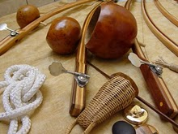
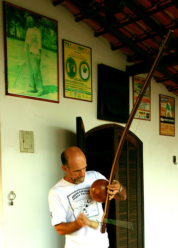
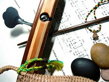
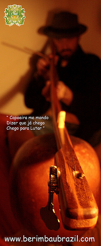
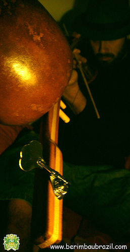
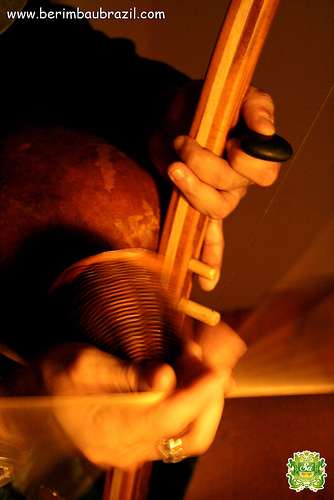
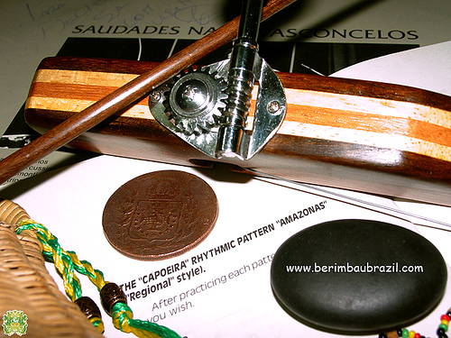

Berimbau Contemporaneo
 Беримбау знаком каждому капоэристу и считается неотъемлемой, хоть и не исконной частью нашего искусства. Я всегда считал, что этот первобытный перкуссионный инструмент абсолютно самодостаточен и не приемлет каких-либо новшеств. Пока не встретил упоминание в сети о восьмиструнном шестикабасном электровенике с дисторшном berimbau contemporaneo, созданном Élio Moreira и Décio de Sá специально для перкуссионистов и студийных записей, с возможностью тонкой настройки тембра. Даже как-то сжечь сразу не тянет,
Внутри есть даже видео и немного фоток этого красавца.
